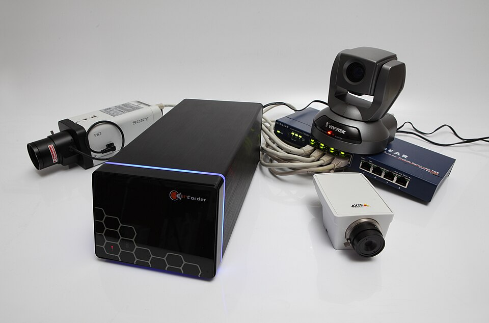
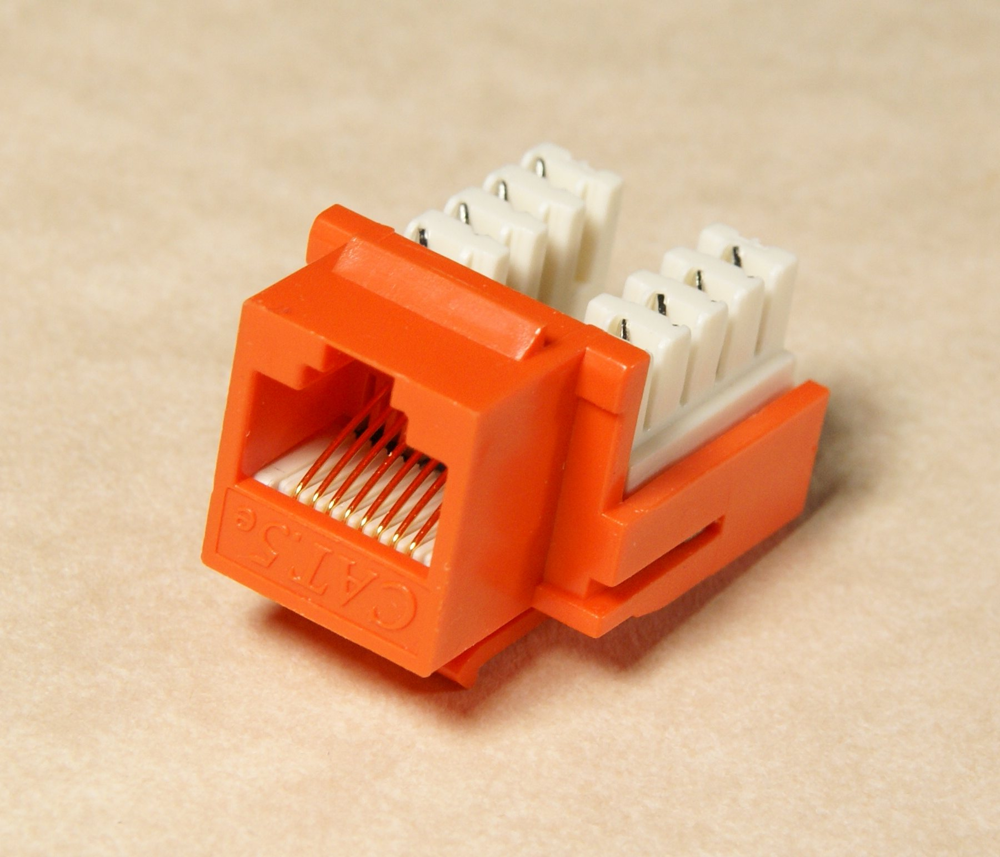

Commission an IP camera and verify recorded video
Use one bench camera to distinguish power, network, live-view and recording faults before a site handover.
A camera you own, compatible standards-based PoE switch or an injector documented for the camera, two known-good patch leads, a computer, and a compatible local recorder or camera recording feature. Keep the bench network private and aim the camera at a printed target you own. If you only have a computer, use the three supplied evidence cases.
Trace power and video through different devices

Photo by Petr Novák, Wikipedia, resized. Original photo · CC BY-SA 3.0.


Photo by Dmeranda. Original photo · Public domain.

Read the labels or datasheets for camera power standard and consumption, switch port capability, and total switch power budget. For an injector check which jack is data-in and which is powered data-out. Label the camera CAM-01 and record the switch port. Wired link, an IP address, live video and a playable recording are four separate checks. Axis Academy’s network video lab syllabus.
Commission one camera and prove it recorded
Connect the camera to the assigned powered port. Compare the switch’s power status and Ethernet link status with the camera instructions. On your private test setup, view the DHCP lease on the local router or use the manufacturer’s local setup method to identify the device. Record the address and how it was assigned.
Set up your camera and recorder with their documented process. Open live view while showing a printed identifier and walking a neutral test object into the frame. Compare the image with room lighting changed. Keep the subject large enough to read and avoid aiming at people or neighbours.
Record a short scheduled or continuous clip for the first pass. Include a written time marker in the scene. Check displayed time, timezone and recorder timeline against the written event. Jump back to the marker and play it. Reopen playback independently of the live window. If using an export, open it in the approved player and check both its content and time.
Disconnect the test patch lead for about a minute and reconnect it. Recheck live view, record a new marker and verify playback resumes. Document what the recorder reports during the outage. Check any time or recording configuration the outage revealed before handover.
Watch the recorder workflow · Identify the separate live, recording and export views. The published example uses AXIS Camera Station 5. Use the help guide for the exact version on your bench. Getting familiar with AXIS Camera Station · Axis Technical Support Videos · Axis Camera Station Pro manual.
Localise each failure before swapping hardware
| Sample observations | Next check | Closing evidence |
|---|---|---|
| Port shows zero watts and no link. Same camera and lead work on a known PoE port. | Verify the assigned port’s power capability, administrative status and remaining budget. | Power and link recorded on the assigned port after correction. |
| Switch shows 5.4 W and link. Camera lease exists. Recorder shows offline. | Open the authorised camera interface from the bench client. Verify the recorder address, supported camera stream and configuration if live view works directly. | Matching device identity and stable live view on the recorder. |
| The camera appears live. The written time marker is absent from playback. | Check recording policy, storage health and system time on both ends. Record another marker with a known continuous schedule. | Playback shows the marker at the expected time after correction and again after link recovery. |
At an average 3 Mb/s, one continuous stream requires about 32.4 GB per day before overhead. Actual bit rate depends on lighting, motion, scene and encoder settings. Use measured average bit rate and actual storage for a retention estimate.
Save the port and device tag, power status, IP assignment method, one still showing coverage, and a report with recording time and outage behaviour. Keep passwords and any private footage out of the record. Use C05 for site survey, installation and Australian work scope.